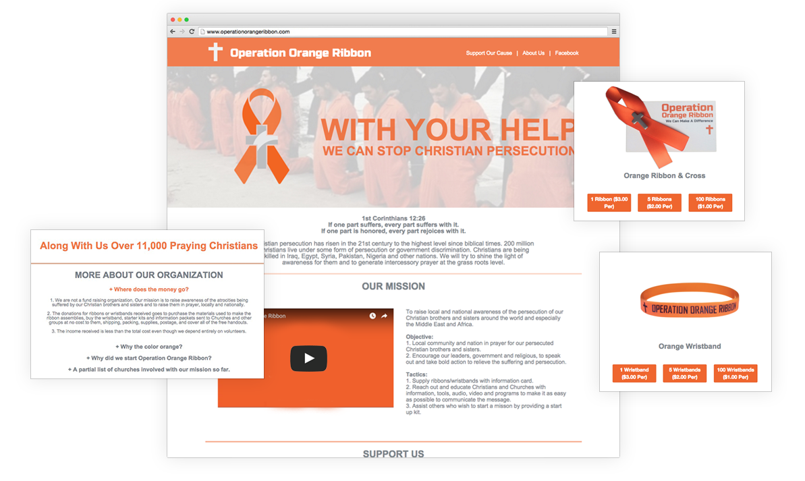
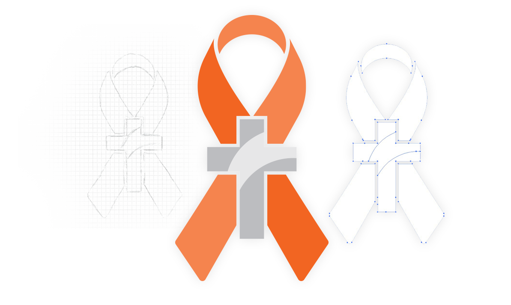
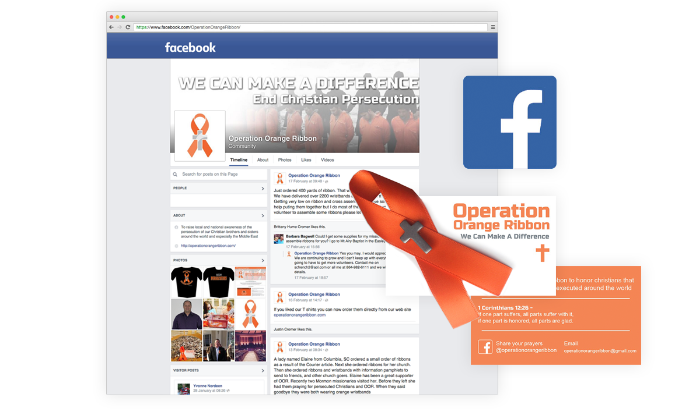

Operation Orange Ribbon is a grassroots non-profit organization that needed help creating an outlet for their voice to be heard. Working with a limited budget, we decided that a website with powerful imagery and words would be the best solution. I created a website for the organization that was able to share their story, their mission, and their accomplishments all in one place.
Visit the live site.
Operationorangeribbon.com


As a new organization, Operation Orange Ribbon lacked an actual logo. The organization spreads awareness by passing out orange ribbons with cross pins attached to them, so it seemed best to turn their symbol of awareness into an official logo. I replicated the ribbon and pin digitally into a logo that could span a greater variety of mediums for the group.
Creating a movement of any size needs a powerful platform to support the community and share ideas. Operation Orange Ribbon’s Facebook page brings together their website, supporters, and linking churches. The Facebook page acts as an extension for the group to share their mission with the rest of the world. With subtle marketing and a call for action, building up their social media presence has to led to over 100,000 impressions, 7,000 ribbons being passed out, and 6,000 wristbands being passed out.

 Previous Project
Previous Project